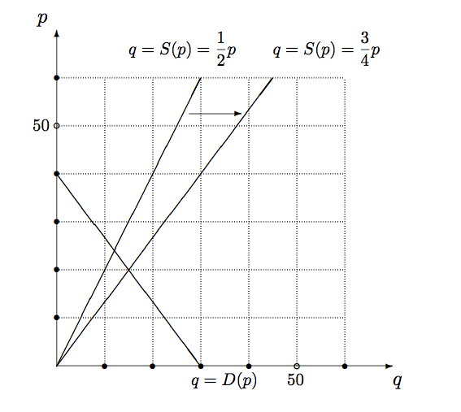

経済学で出る数学
ワークブックでじっくり攻める：問1.9
【解答 1.9】
\begin{eqnarray}
D(p)&=&30-\dfrac{3}{4}p \tag{需要}\\[2ex]
S(p)&=&\dfrac{1}{2}p \tag{供給}
\end{eqnarray}
-
- 逆需要関数は $D(p)$ の逆関数．したがって
\begin{eqnarray}
q&=&30-\dfrac{3}{4}p \tag{需要関数}\\[2ex]
p&=&40-\dfrac{4}{3}q \tag{逆需要関数}
\end{eqnarray}
- 逆需要関数は $D(p)$ の逆関数．したがって
\begin{eqnarray}
p&=&40 \tag{$p$切片}\\[2ex]
q&=&30 \tag{$q$切片}
\end{eqnarray}
-
$S(40)=\dfrac{1}{2}\times 40=20$．これで供給曲線は原点と$(20,40)$ を結べばよいことがわかる $(p, q)$ の順であることに注意しないと，マーシャルの罠に落ちる．
- 市場均衡は，次の連立方程式を解けば，
\begin{eqnarray}
q&=&30-\dfrac{3}{4}p\\[2ex]
q&=&\dfrac{1}{2}p
\end{eqnarray}
$30-\dfrac{3}{4}p=\dfrac{1}{2}p \Longleftrightarrow 30=\dfrac{5}{4}p$ なので$p=24$，$q=12$ となる．
- 新しい市場均衡は，次の方程式を解けばよい．
\begin{eqnarray}
q&=&30-\dfrac{3}{4}p\\[2ex]
q&=&\dfrac{3}{4}p
\end{eqnarray}
$30-\dfrac{3}{4}p=\dfrac{3}{4}p \Longleftrightarrow 30=\dfrac{6}{4}p$ なので$p=20$，$q=15$ となる．供給量が増えることで，均衡価格は下った．

【問 1.9終わり】
解答例一覧へ